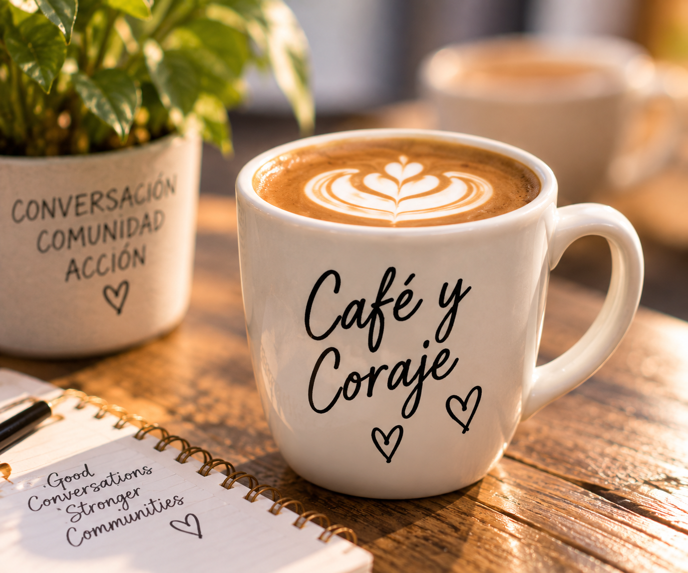

A historic first
Marisol Martinez brings the first Latino Pride float to Cleveland’s Puerto Rican Parade.
Latin Pride Project is our initiative to celebrate, uplift, and empower Latinx LGBTQ+ individuals through culture, connection, and collective action. We honor our heritage, embrace our full identities, and create spaces where our community can thrive.
FOUNDER
In 2022, Marisol Martinez spearheaded the first Latino Pride float in Cleveland’s Puerto Rican Parade. She wanted to bring greater awareness and visibility to LGBTQ+ people within the Latino community, creating a moment where culture and identity could be celebrated together.
Her work opened space for connection and pride—and laid the foundation for what would become the Latin Pride Project.
“I wanted to bring awareness to our community. Our community is very macho, and things happen, and they’re not talked about.”— Marisol Martinez, WKYC (2022)Read Marisol’s story on WKYC ↗

OUR JOURNEY IN PHOTOS
Moments of pride, community, and celebration.

OUR STORY
Marisol Martinez brings the first Latino Pride float to Cleveland’s Puerto Rican Parade.
MQA+ takes over the Latin Pride Project, continuing Marisol’s vision and expanding opportunities for community engagement.
Latin Pride returns to the Puerto Rican Parade, bringing the community together in celebration.
Building year-round connection through culture, community, and celebration.
Same Roots.
A Bigger
Tomorrow.
FROM A PARADE FLOAT TO A COMMUNITY INITIATIVE
What began as a historic parade float has grown into the Latin Pride Project—now an initiative of MQA+. We are honored to continue Marisol’s vision by creating year-round opportunities for connection, support, and celebration for LGBTQ+ Latinx/Hispanic individuals and allies.
Through cultural programming, community groups, events, and partnerships, we keep the spirit of the parade alive.
BE PART OF LATIN PRIDE
There are many ways to get involved and help keep this movement alive.
Support our events and community activities.
Volunteer →Let’s collaborate for greater impact.
Partner With Us →Help us continue the Latin Pride Project.
Make a Donation →
CONNECTED COMMUNITY GROUP
A welcoming space to connect, share experiences, and build community together.
Explore Café y Coraje →OUR SPONSORS THROUGH THE YEARS
Thank you to the organizations and community partners who have helped make the Latin Pride Project possible. Your support fuels visibility, inclusion, and a stronger tomorrow.
.png)
.jpg)


.png)

People. Culture. Community. Always.
Get Involved →